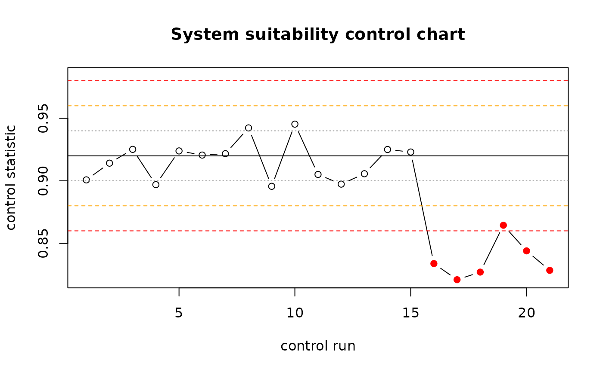

Control chart with Westgard rules for ongoing system suitability
Source:R/spc.R
msa_control_chart.RdA validation is a snapshot; providers change models silently, prompts are edited and endpoints drift. Clinical laboratories handle the same problem with control samples run alongside every batch and judged with Westgard multi-rules. The same applies here: keep a small control set with known answers, run it before every productive batch, and chart the control statistic (for example the percent correct, or the mean parsed value) over time.
Usage
msa_control_chart(
x,
center = NULL,
sd = NULL,
n_baseline = 10,
rules = c("1_2s", "1_3s", "2_2s", "R_4s", "4_1s", "10_x")
)Arguments
- x
Numeric control statistic in time order.
- center, sd
Target center and standard deviation, typically from the validation study (e.g. the mean and sd of the control statistic across its replicates). If
NULL, estimated from the firstn_baselinevalues.- n_baseline
Number of initial values used to estimate
centerandsdwhen they are not given.- rules
Rules to evaluate.
Value
A data.frame of class msa_control_chart with x, z, a
logical column per rule and reject (any rejection rule fired;
1_2s is a warning only).
Details
Implemented rules on the z-scores (x - center) / sd:
1_2s (warning, one value beyond 2 sd), 1_3s (one value beyond 3 sd),
2_2s (two consecutive values beyond 2 sd on the same side),
R_4s (two consecutive values differing by more than 4 sd),
4_1s (four consecutive values beyond 1 sd on the same side),
10_x (ten consecutive values on the same side of the center).
Examples
set.seed(3)
acc <- c(rnorm(15, 0.92, 0.02), rnorm(6, 0.84, 0.02)) # drift after a silent model update
cc <- msa_control_chart(acc, center = 0.92, sd = 0.02)
cc[cc$reject, ]
#> Control chart: 6 points, center 0.9200, sd 0.0200; 6 rejection(s)
#> rules fired: 1_3s (5), 2_2s (5), R_4s (1), 4_1s (3)
#> index x z 1_2s 1_3s 2_2s R_4s 4_1s 10_x reject
#> 16 0.8338469 -4.307656 TRUE TRUE FALSE TRUE FALSE FALSE TRUE
#> 17 0.8209397 -4.953017 TRUE TRUE TRUE FALSE FALSE FALSE TRUE
#> 18 0.8270351 -4.648243 TRUE TRUE TRUE FALSE FALSE FALSE TRUE
#> 19 0.8644863 -2.775686 TRUE FALSE TRUE FALSE TRUE FALSE TRUE
#> 20 0.8439962 -3.800188 TRUE TRUE TRUE FALSE TRUE FALSE TRUE
#> 21 0.8284303 -4.578484 TRUE TRUE TRUE FALSE TRUE FALSE TRUE
plot(cc)
